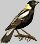
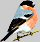
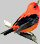
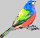

Wednesday, January the 26th, 2005
back to: title, date or indexes
Look, look! Here are five tiny birds!

That was a tiny bobolink, I am sure of it. I know a bobolink when I see one, which is not often, admittedly, as I live in a hermit's cave, though I am not a hermit by inclination. I am garrulous.

And that looks like a tiny pyrrhula, Stalin's favourite bird, according to The Fat Compendium Of Spurious Bird-Related Facts About The Soviet Union, my father's favourite book. My father was garrulous too, and no one ever asked him to live in a cave. He lived above a shop that sold prosthetic limbs. Here comes another tiny bird!

It is a tiny scarlet tanager. Now that is a bird I have never heard of before.

Gosh! Hot on its heels comes a tiny painted bunting, not that birds have heels as such. They have claws and talons or very thin little twig-like feet. Some say that long, long ago human beings began to write by copying the tracks made by the feet of birds in snow or mud. There is one more tiny bird to come. I think it will be a tiny harlequin duck, I can feel it in my water.
Oops! I was wrong! It is a tiny mute swan. And now I too will become mute, for it is breakfast time, time for a bowl of roots and chaff, and I must concentrate on the effective working of my digestive juices.
Hooting Yard on the Air, January the 26th, 2005 : “Five Tiny Birds” (starts around 00:59)